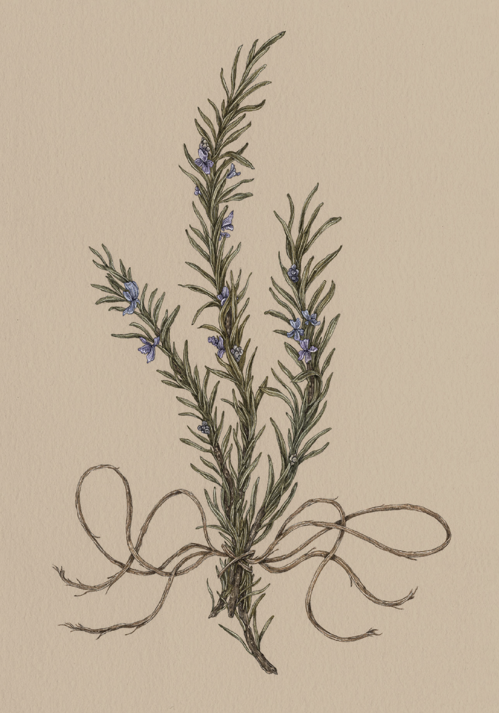

The Language of Flowers
Rosemary

Rosemary
Salvia rosmarinus
Meaning
- Remembrance
- Wisdom
Origin
Rosemary has been associated with memory since ancient Greece; to help them recall their lessons,
Greek scholars wore crowns of rosemary during their examinations. This symbolism was cemented with the
help of Shakespeare. In Hamlet, during her famous "flower speech," Ophelia mentions the
fragrant herb: "There's rosemary, that's for remembrance. Pray you, love, remember."
Pair With
- Crocus to reminisce about the past
- Clematis for confidence in scholarly pursuits